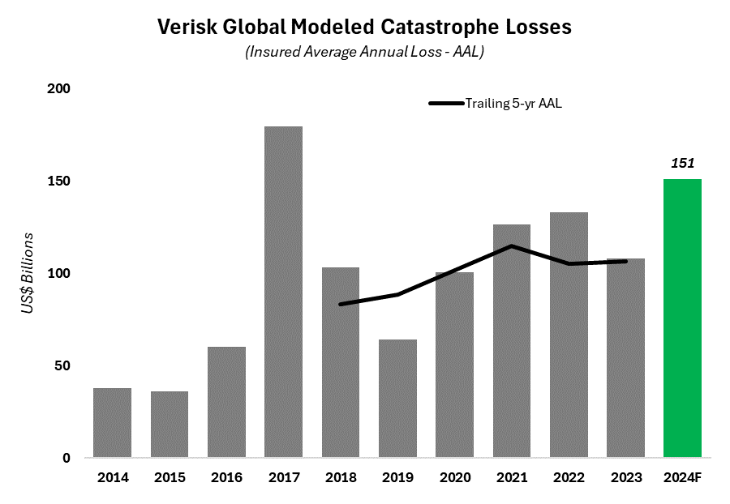
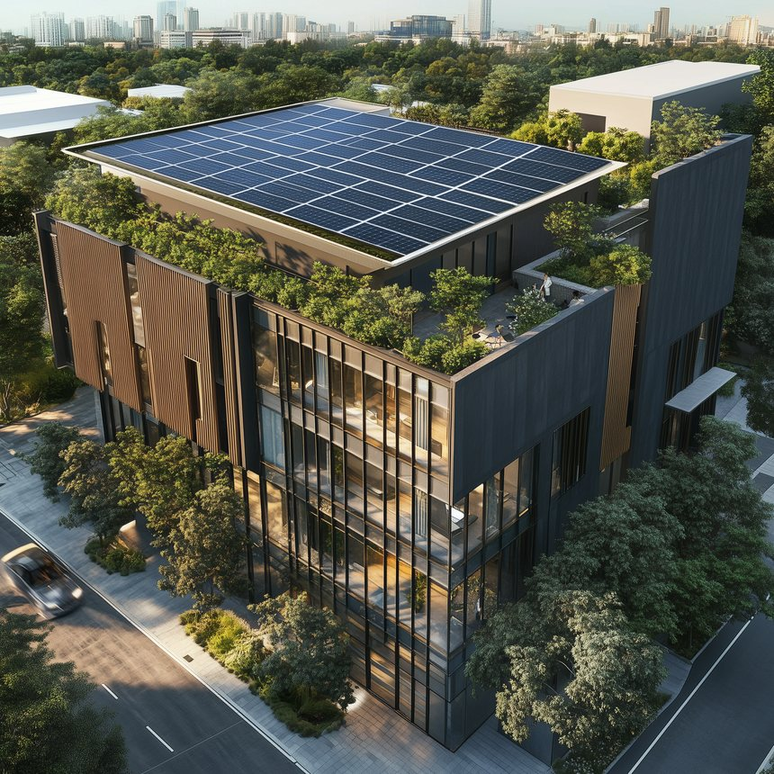
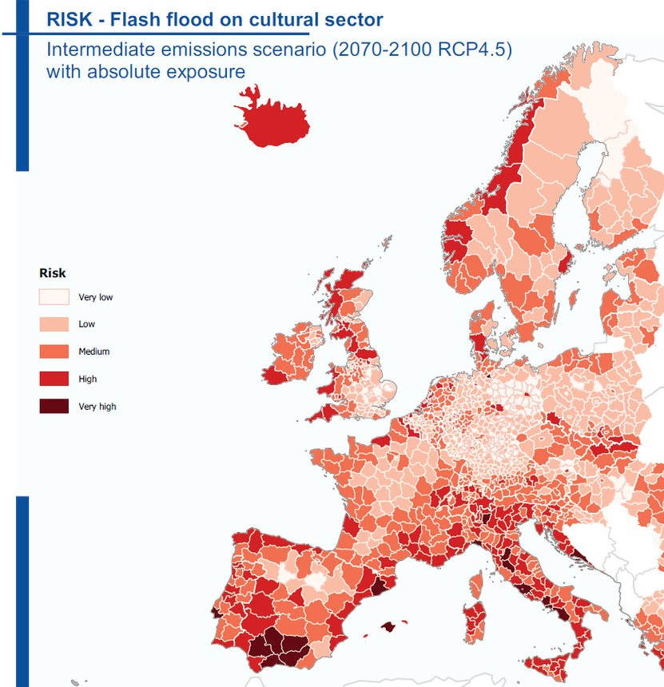
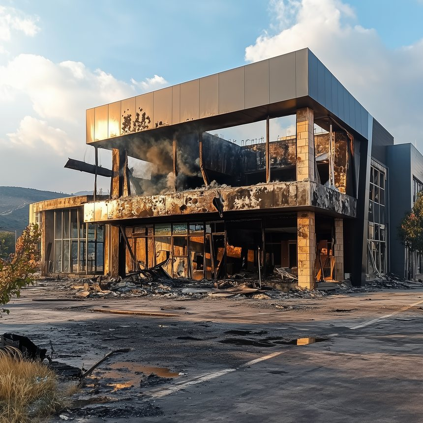

Energy Transition Watch: Rising Catastrophe Losses and the Real Estate Imperative
Climate volatility is rewriting the risk calculus. Europe’s buildings are on the front lines.
In September 2024, the President of the European Union announced a €10 billion emergency fund in response to catastrophic floods across Central Europe. It was a historic commitment, but also a signal: climate risk is no longer theoretical. It is financial, operational, and immediate.
$151bn
Average global insured losses
from natural catastrophes annually [1]
For commercial real estate investors, that reality is now backed by data. According to Verisk’s 2024 Global Modeled Catastrophe Losses report, natural disaster losses have surged to unprecedented levels, and are rising sharply across Europe.
€79bn
Estimated European losses at a
1-in-100-year return period [1]
These losses are driven by a familiar set of converging forces: urban expansion, inflation, and climate change. But for real estate, they are also a wake-up call. Properties that cannot withstand increasing weather extremes (floods, wildfires, heat waves) face more than repair bills. They face obsolescence.

Transition Risk Is Now Investment Risk
CRE owners and asset managers must now evaluate risk across four domains, each directly impacting financial performance.
- Regulatory Risk: The EU’s ‘Fit for 55’ legislation, the EPBD, and ETS 2 are already reshaping real estate compliance. Buildings that fail to meet energy performance targets will incur significant retrofit costs or, in some markets, become legally non-operational. NZEB standards are quickly becoming the floor, not the ceiling.
- Market Risk: Tenant and investor demand for climate-aligned assets is accelerating. Buildings that lack credible carbon reduction pathways are being repriced, and in some segments are already facing liquidity constraints.
- Technology Risk: Outdated HVAC systems, lack of on-site renewables, and poor energy monitoring are now red flags. Smart buildings with embedded resilience and active demand-side energy management (such as load shifting and real-time consumption controls) are fast becoming the market default.
- Economic Risk: Verisk highlights a growing protection gap in Europe: the widening divide between insured and total economic losses. Globally, average annual catastrophe losses now exceed $470 billion [1]. Much of it remains uninsured.
Aligning CRE Portfolios with Climate Adaptation
To manage these risks, forward-looking investors are embedding Paris Agreement alignment into capital planning. Key areas of focus include:
Boost Energy Efficiency
Energy retrofits are no longer discretionary, they are essential for regulatory compliance, tenant appeal, and operating margin protection. Beyond heat pumps and insulation, strategies include:
- Green roofs and facades
- Passive ventilation systems that reduce mechanical cooling needs
- Smart thermal controls
- Climate-adaptive windows

High EPC ratings increasingly translate into both value premiums and regulatory clearance.
Invest in Renewable Energy
On-site solar, battery storage, and long-term renewable energy supply contracts (PPAs) are moving from innovation to infrastructure. These systems cut Scope 2 emissions and insulate owners from volatility in grid pricing and fossil-fuel-linked carbon costs.
Prepare for Carbon Pricing
With EU ETS 2 set to cover the built environment by 2027, emissions-heavy buildings will soon face rising operating costs. Transitioning to low-carbon systems now, such as electrified heating and green materials, can help avoid those costs entirely.
Strategic retrofits today will reduce exposure to escalating carbon prices tomorrow.
Flooding, Fires, and the Acute Risk Landscape
Climate volatility in Europe is no longer rare. In just the past year, Germany, Belgium, and the UK have faced multiple billion-euro flood events. The floods in Baden-Württemberg and Bavaria in mid-2024, linked to persistent cyclonic systems, resulted in insured losses of €2 to €3 billion.

According to a recent analysis by Moody's, flood risks continue to rise due to more frequent and intense storms, as seen in events from 2002, 2013, 2016, and 2024. Alarmingly, a large portion of these losses remains uninsured, leaving homeowners and businesses exposed to significant financial vulnerability. Insurance penetration, while improving (rising to 52% in Germany in 2023 from 19% pre-2002), is still far from covering the full scope of potential damage.
Moody’s analysis confirms that cyclone-linked flooding is intensifying, and is now rrecurring in regions previously considered low-risk or off-season. For CRE owners, this means:
- Insurance coverage gaps must be audited
- On-site flood mitigation (e.g. drainage, waterproof materials) must be evaluated
- Regional risk mapping must be integrated into acquisition and portfolio decisions
Fire Risk Is Spreading South

Southern Europe faces its own crisis. In 2024, Southern Europe experienced some of the worst wildfires on record, with tens of thousands of hectares burned across Portugal, Spain, and Greece. Asset managers are beginning to treat these as annual, not exceptional, threats.
Properties once considered climate-stable are now exposed. Real estate investors in the region are adapting by:
- Reclassifying fire risk zones
- Shifting investment toward resilient construction
- Considering seasonal demand volatility in valuation models
A Strategic Moment for Real Estate
As the EU’s Crisis Management Commissioner put it, “Europe is facing both environmental and financial destabilization.” Climate adaptation is no longer an ESG narrative. It is an investment necessity.
By focusing on energy performance, carbon compliance, and physical resilience, CRE investors can shift from reactive defense to strategic leadership.
The Future Belongs to the Prepared
The EU's €10 billion emergency fund is a political response. The real question is how investors will respond with capital.
Real estate portfolios that adapt will thrive. Those that don’t may find themselves underwater, both literally and financially.
[1] Verisk. "Modeling Insured Catastrophe Losses: A Global Perspective for 2024". 2024.